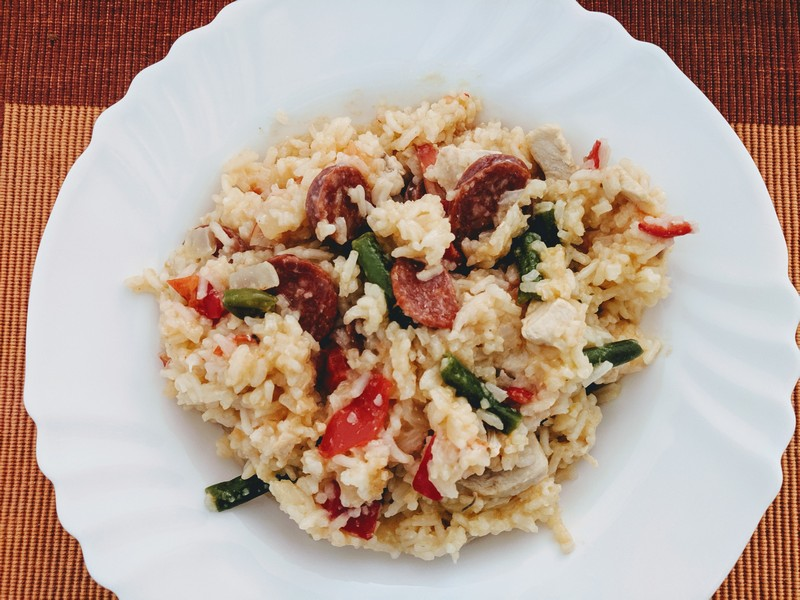

Tenhle recept inspirovaný Albert magazínem mám v plánu ještě trochu vymazlit, upravit poměry jednotlivých surovin (méně masa, více zeleniny) a podobně… Ale Péťovi tak chutnalo, že si ho sem prostě musím uložit, ať vím, od čeho se příště odpíchnout. Tak můžete také vyzkoušet :-)
- 2 lžíce olivového oleje
- 200g klobásy chorizo
- 3 stroužky česneku
- 1 cibule
- 1 červená paprika
- 1 rajče
- 300g kuřecích prsních řízků(příště dám tak 1 menší kuřecí prso)
- 300g rýže na rizoto (např. arborio)
- 900ml kuřecího vývaru
- 1 balení šafránu (0,12g) - neměla jsem, ale příště určitě seženu
- 400g krevet
- 1 hrst fazolových lusků
- 1 hrst hladkolisté petrželky(měla jsem jen pažitku)
V pánvi rozehřejeme 1 lžíci oleje a opečeme na něm na kolečka nakrájenou klobásu. Vyjmeme, přidáme do pánve další lžíci oleje a krátce na něm opečeme nakrájený česnek a cibuli. Přidáme nakrájenou papriku a rajče, dále na proužky nakrájené kuřecí maso a opečeme. Přidáme rýži a promícháme. Do pánve vrátíme klobásku. Zalijeme vývarem, zasypeme šafránem a za stálého míchání 3 minuty zprudka dusíme. Plamen stáhneme a 10 minut vaříme bez míchání. K závěru přidáme krevety, fazolové lusky a povaříme 7 minut. Podáváme posypané nasekanou petrželkou.
